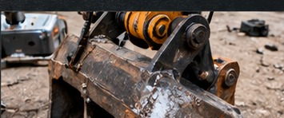
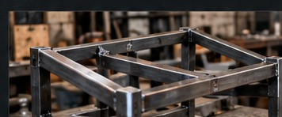
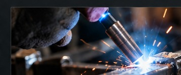

Réparation
Remise en état de pièces et équipements métalliques, réparation de structures et d'éléments usés.
Un savoir-faire au service de vos projets métalliques
Demander un devis →
Remise en état de pièces et équipements métalliques, réparation de structures et d'éléments usés.

Conception et réalisation de pièces et structures métalliques selon vos besoins.

Travaux de soudure soignés pour vos réparations, assemblages et fabrications.
Découvrez quelques réalisations de l'atelier.
Une question, un projet ou une demande de devis ? N'hésitez pas à me contacter.